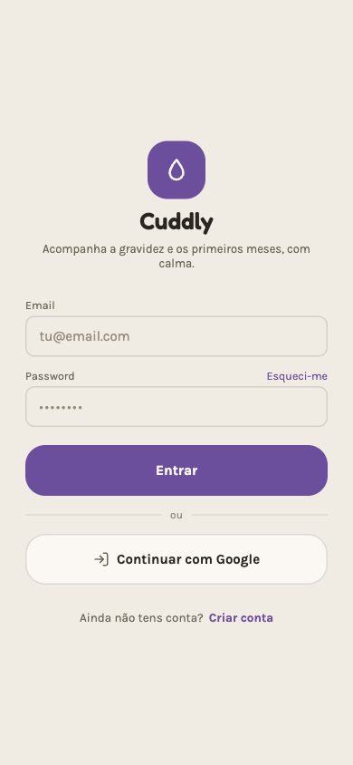
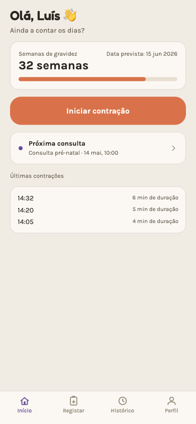
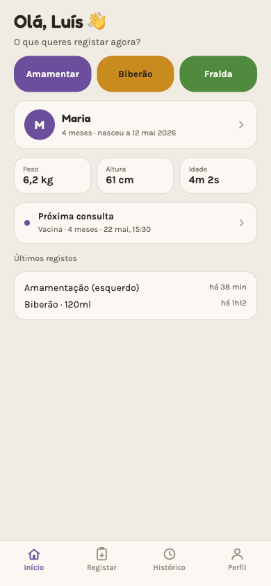
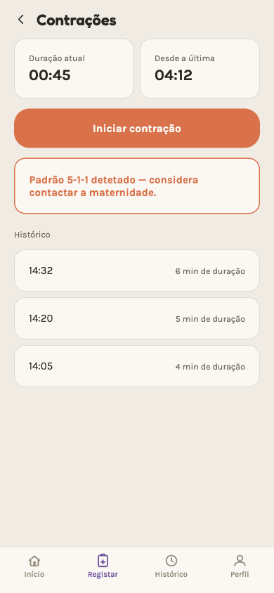
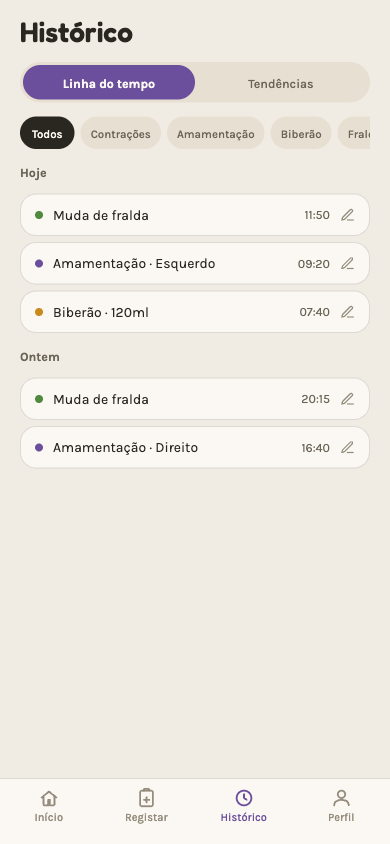
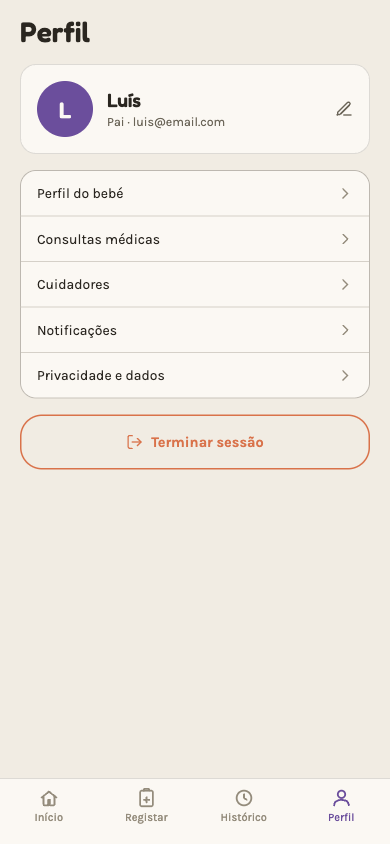

Cuddly helps you log contractions, breastfeeding, bottles, diapers, sleep and doctor's appointments — shared with everyone who cares for the baby with you, and built to be used one-handed in the middle of the night. Open source, made as an academic project.
Most pregnancy and baby apps try to do everything at once — stats, social feeds, sponsored content. Cuddly keeps only what matters.
No endless scrolling, no needless notifications. Open, log, close.
Big buttons, few taps, everything usable with one hand while half asleep.
Pregnancy mode before the birth, postpartum mode after — the app changes with you, not the other way round.
No selling data to third parties, no ads. See the privacy section below.
Everything you need in the first months — and every entry shows up straight away on the phone of whoever cares for the baby with you.
Timer with 5-1-1 pattern detection.
Timer per side, suggests the next one.
Amount and type of milk.
Quick log, time since the last one.
A timer that keeps going with the app closed.
Duration and amount in ml.
Every new food, with reactions highlighted.
Calendar with reminders.
Invite whoever cares for the baby with you and share the log.
Export as JSON or CSV, delete whenever you want.
Mockups of the app's current design (not final screenshots). The app itself is in Portuguese for now — English is on the way.






All data shown is made up.
Cuddly is the final project for UC00507 (Designing dynamic web pages) at IEFP, Portugal — built by Luís, Sara, Eliseu and Beatriz.
Cuddly 2.0 for Android, as an APK. It isn't on the Play Store, so your phone will ask for permission to install it.
Download the APKcuddly-2.0.0.apk.